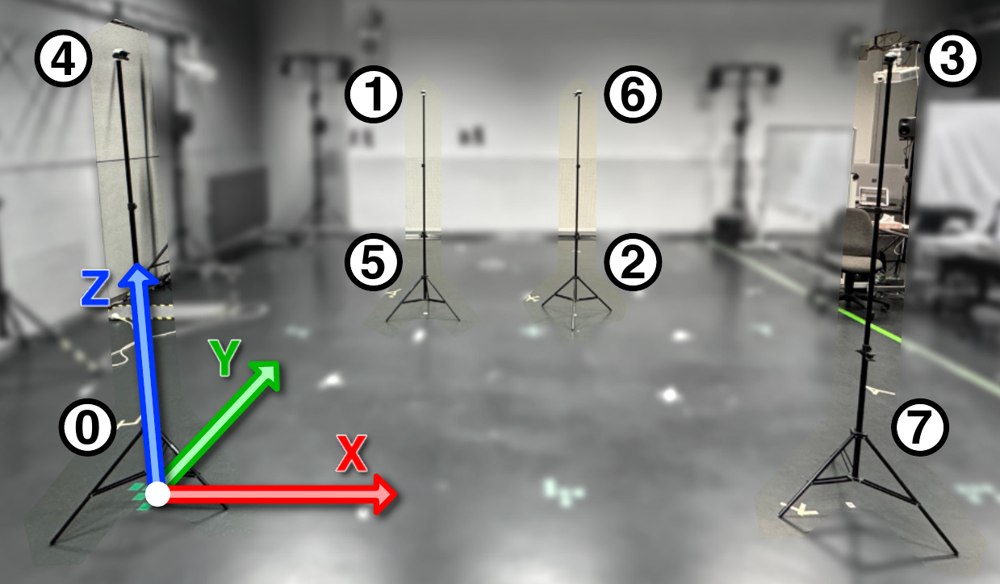

A Mixed Reality Tool to Easily Set Up Indoor Tracking for Robots and Drones
by
Dominik Grzelak and Victor Victor
TU Dresden
Welcome to XR-PALS
XR-PALS is an open-source research project aimed at improving indoor positioning systems for mobile robots using mixed reality technologies. It integrates ultra-wideband (UWB) tracking with intuitive spatial setup tools to simplify the deployment of localization infrastructure in dynamic indoor environments.
Mobile Cyber-Physical Spaces & Indoor Positioning
Precise indoor positioning is essential for safe operation of mobile robots in dynamic environments. XR-PALS addresses the challenges of configuring indoor localization systems by providing an intuitive mixed reality interface that bridges virtual and physical space. The system simplifies setup, reduces errors, and minimizes cognitive load for researchers and practitioners to facilitate non-stationary, structurally-free tracking systems.

Loco Positioning System of Crazyflie
The XR-PALS system leverages the Crazyflie Loco Positioning System, a UWB-based localization platform. Traditional setup of UWB anchors requires time-consuming manual measurements, often using laser distance meters and complex calculations for non-rectangular layouts. XR-PALS replaces this with a seamless mixed-reality approach.
User Study & Publication
A comprehensive user study compared XR-PALS to traditional laser-based setup methods. The study demonstrated that XR-PALS significantly reduces task completion time, measurement errors, and cognitive workload.
(Optional) Custom-designed tripods and tripod-mounted anchor holders
Getting Started
This video demonstrator shows how to manually set up and use XR-PALS together with the Crazyflie Loco Positioning System. It provides a quick overview of how the mixed reality interface simplifies the placement and configuration of UWB anchors for precise indoor localization.
You are welcome to contact us for consulting services on ordering, setup, usage, integration, or extension of the XR-PALS system.
This project is primarily aimed at research institutions, the open-source community, and interested private individuals.
Contact: dominik [dot] grzelak [ät] tu-dresden [dot] de